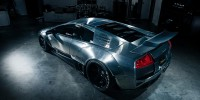

Automobili Lamborghini Holding S.p.A., comúnmente conocido como Lamborghini

login del usuario
EL ORIGEN
Terminada la segunda Guerra Mundial, Ferruccio Lamborghini, que había servido en un destacamento de transporte para el Ejército Italiano, comenzó a comprar sobrantes de vehículos militares para convertirlos en maquinaria agrícola.
Tal fue el éxito de su nuevo negocio que, en 1960, Lamborghini ya era el tercer fabricante industrial Italiano en el sector de la construcción de maquinaria agrícola, especialmente de tractores. Con las ganancias obtenidas, Ferruccio empezó una vida opulenta, adquiriendo algunas propiedades, y sobre todo muchos coches deportivos como Mercedes, Lancia, Maserati y Ferrari. Era un admirador de Enzo Ferrari por la forma en que mantenía su empresa, pero siempre tuvo una dificultad: Ferruccio tenía problemas mecánicos con sus Ferrari. El motivo en particular, y la gota que colmó el vaso, fue el embrague de su Ferrari 250 GTB. Tras numerosas revisiones en el taller, todavía fallaba. Ferruccio decidió comunicarlo a uno de sus mecánicos, que tras desarmarlo y verificarlo, descubrió que era el mismo que utilizaba en sus tractores, claro que con un precio más alto al estar en un automóvil deportivo, lo que le enfureció. Cansado de tener que soportar estos inconvenientes, entabló una conversación con el mismo Enzo Ferrari que pasó a la historia.